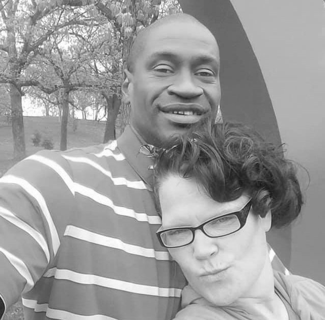
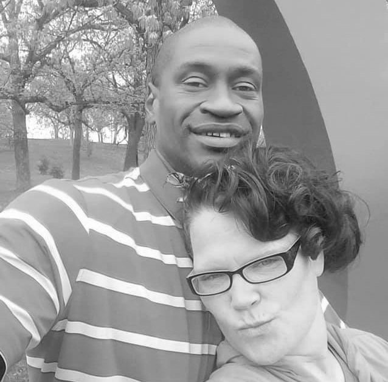
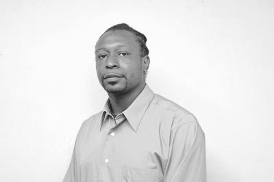
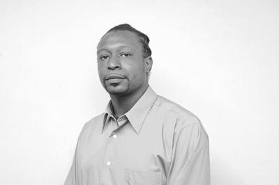

 



Akay Gurley
Akai Gurley kwam om na een schot van een nerveuze agent wanneer hij met zijn vriendin het trappenhuis van zijn appartementen complex binnen liep.
George Floyd
Op 25 mei werd de politie gebeld nadat Floyd geprobeerd zou hebben een pakje sigaretten af te rekenen met vals geld. In een video is te zien hoe een witte politieagent minutenlang met zijn knie op zijn nek zat, terwijl Floyd stikt en de inmiddels bekende woorden "I can't breathe" zegt.
Jack Jacquez
Jack werdt achtervolgd nadat hij vanaf het huis van zijn vrienden naar huis aan het skateboarden was. Wanneer hij thuis arriveerde schoot een agent hem neer wanneer hij zijn huis in liep.
Levar Jones
Levar Jones werdt neergeschoten toen hij aangehouden was door een agent omdat hij geen gordel droeg in zijn auto. Beelden hebben vastgesteld dat Levar zijn handen omhoog had wanneer hij werdt neergeschoten.
Terence Crutcher
Terence Crutcher werdt doorgeschoten nadat hij staande was gehouden tijdens een stukje autorijden. Hij was ongewapend.
William Chapman
William werdt vermoord door een agent op de parkeerplaats van een Wall-Mart, Hij werdt onrechtmatig beschuldigd als winkeldief.